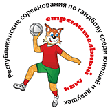

История соревнований берет свой отсчет с 1976 года, когда по инициативе газеты «Советский спорт» был создан Всесоюзный клуб «Стремительный мяч». В отличие от других стран бывшего Советского Союза, в Беларуси соревнования не прекращались и в суверенное время, хоть и носили вялотекущий характер. С 2007 года турнир обрел новую жизнь, когда в состав организационного комитета вошел, в том числе, и Президентский спортивный клуб.
В наши дни «Стремительный мяч» пользуется огромной популярностью среди юных любителей гандбола всей страны. В борьбе за звание сильнейших ежегодно принимают участие команды юношей и девушек из всех областей Беларуси и города Минска.